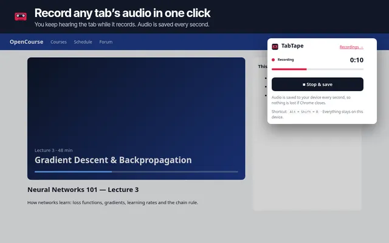
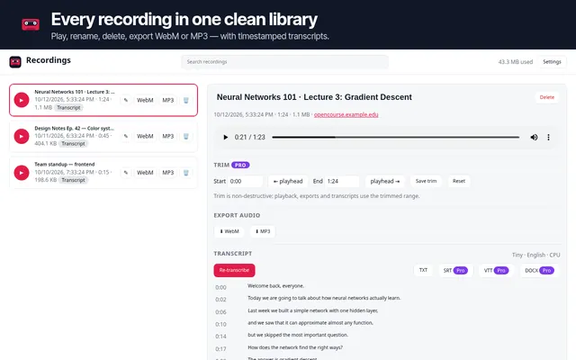
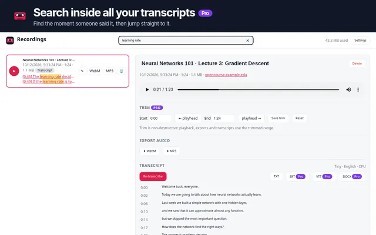
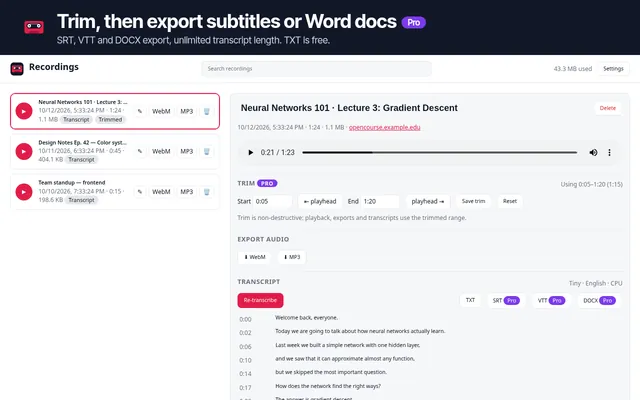
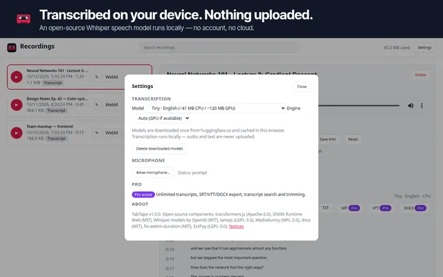

Chrome extension by EvereSoft
TabTape: record tab audio and transcribe it privately
TabTape records the audio of any browser tab in one click and turns it into text on your computer. Use it for online lectures, webinars, podcasts, interviews and meetings that run in the browser.
Record
- One click records the current tab's audio. You keep hearing the tab while it records.
- Optionally mix in your microphone.
- Crash-safe: audio is saved to your device every second.
- Keyboard shortcut: Alt+Shift+R.
Organize and export
- A clean library: play, rename, delete.
- Export to WebM or MP3.
- Click any transcript line to jump to that moment.
Private transcripts
- Speech-to-text runs on your device using the open-source Whisper speech model.
- Your audio and transcripts are never uploaded. No account needed.
- The speech model (about 40–120 MB) downloads once, then works offline.
Pricing
Free
$0
- Unlimited recording
- Microphone mix
- Library and playback
- WebM and MP3 export
- Transcripts of the first 10 minutes of each recording
- TXT transcript export
Pro Optional
$4 USD / month
or $29 USD / year
- Everything in Free
- Transcripts of any length
- Subtitle export (SRT, VTT)
- Word (DOCX) export
- Search inside all your transcripts
- Trimming
Payments are processed by ExtensionPay using Stripe. Prices are in US dollars. Subscriptions renew automatically until you cancel, and you can cancel anytime. See our Terms and Refund & Cancellation Policy.
Screenshots










Good to know
- Chrome doesn't let extensions record its own pages (chrome:// pages and the Chrome Web Store).
- Some streaming sites use copy-protected (DRM) audio, which can't be recorded. TabTape tells you when that happens and doesn't try to get around it.
- Transcription accuracy depends on audio quality. Please review important transcripts.
- Only record content you have the right to record, and follow your local laws on recording conversations.
Read the TabTape privacy policy.